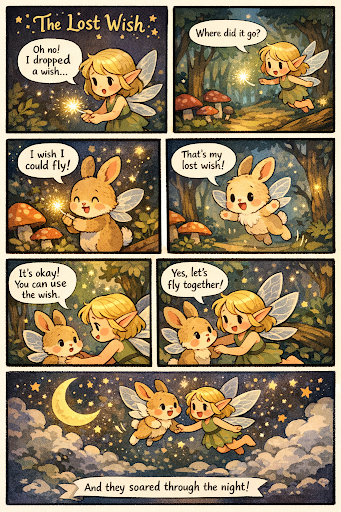

Make 3 · Week 4 · Comic / Narrative
Comic: The Fairy and the Wish
Tools: AI image generator, Markdown · Week 4

Commentary
In this assignment, I used AI to create a short comic about a fairy who loses a wish and a bunny who accidentally finds it. The story focuses on kindness and sharing — the fairy chooses to let the bunny use the wish instead of taking it back. My goal was to make a simple, cute story with a clear message: happiness grows when people share what they have.
Using AI to make the comic helped me turn my ideas into visuals quickly and focus more on storytelling instead of drawing skills. The comic format allowed me to show emotions, actions, and changes across panels, while AI helped generate the magical world and characters. This made me think about how creativity can come from guiding technology rather than creating everything by hand.
This project showed me that making a comic with AI is a collaboration between human ideas and machine generation. I decided the characters, theme, and story structure, while the AI generated the visual style, settings, and character designs based on my prompts. The AI was good at quickly producing magical images, but it often followed common fantasy patterns — glowing lights, cute animals. Because of this, I had to guide the process carefully to make sure the story reflected my intention instead of just accepting what the AI produced.
Reflection: Is AI a collaborator, tool, or plagiarist in storytelling?
From this exercise, I see AI as both a tool and a collaborator, but not really a plagiarist on its own. When making the comic, AI helped me generate the visuals quickly — in that way, it worked like a tool that followed my prompts. At the same time, some of the images and details surprised me and influenced how I shaped the story, which made it feel like a collaborator in the creative process.
However, AI does not create meaning by itself. It generates patterns based on existing data, so I still had to decide the story, message, and final choices. Without human guidance, the comic could feel generic or not reflect my intention. This made me realize that storytelling still depends on human judgment and interpretation.
Attribution & AI Use Log
- Tools Used
- AI image generation tool, Markdown / VS Code for writing and formatting
- Prompts Used
- Prompted the AI to create a short 5–6 panel comic about a fairy who loses a magical wish in a forest and a bunny who finds it, with a cute, magical, storybook style and soft pastel colors.
- Human Contributions
- Story concept, theme (kindness and sharing), panel sequence, and which generated images to include in the final comic.
- AI Contributions
- Visual comic panels, character designs, and magical environment.
- Verification / Correction
- Adjusted prompts when AI outputs defaulted to generic fantasy tropes; selected only panels that communicated the narrative arc clearly.